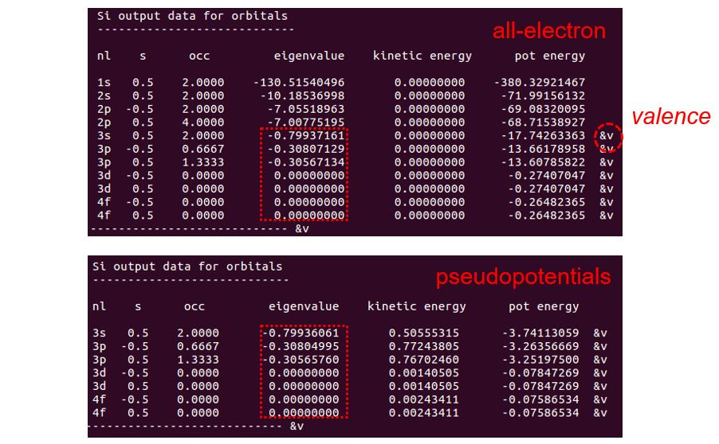
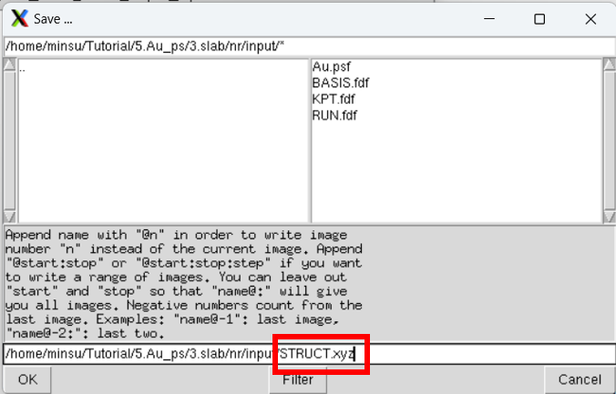
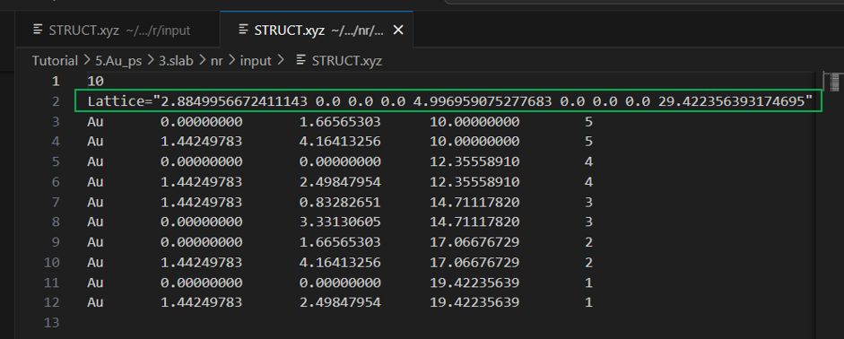

슈도포텐셜 생성
Contents
- 슈도포텐셜 생성
- 슈도포텐셜 테스트
- 심화과정
1. 슈도포텐셜 생성
이번 장에서는 온-전자(all-electron) 계산 강의에 이어 슈도포텐셜(pseudopotential) 생성 방법을 다룬다. 우리는 Si 원자를 예시로 살펴볼 것이다. 우선, /Tutorial 위치로 돌아가서 /PS_Generation에 들어가본다. Pseudopotential를 만들기 위한 예시 파일들이 있다. 이중에서 Si 폴더로 들어가서 Si.tm2.inp 파일을 살펴본다.
Si.tm2.inp:
#
# Pseudopotential generation for Silicon
# pg: simple generation
#
pg Silicon
tm2 3.0 # PS flavor, logder R
n=Si c=car # Symbol, XC flavor,{ |r|s}
0.0 0.0 0.0 0.0 0.0 0.0
3 4 # norbs_core, norbs_valence
3 0 2.00 0.00 # 3s2
3 1 2.00 0.00 # 3p2
3 2 0.00 0.00 # 3d0
4 3 0.00 0.00 # 4f0
1.90 1.90 1.90 1.90 0.00 0.00
#
# Last line (above):
# rc(s) rc(p) rc(d) rc(f) rcore_flag rcore
#
#2345678901234567890123456789012345678901234567890123456789
1-1. 입력값 설명
첫번째 줄:
• 계산 종류(1열):
- ae: All-electron calculation
- pg: Pseudopotential generation
- pe: Pseudopotential generation (core correction)
두번째 줄:
• 슈도포텐셜 생성 방법(1열):
- tm2: Improved Troullier-Martins
- ker: Kerker
• 로그도함수 테스트(2열)
세번째 줄:
• 원소 기호(1열)
• 교환-상관(exchange-correlation) 범함수 종류(2열):
- ca: Ceperley-Alder(LDA)
- pb: Perdew, Burke, and Ernzerhof(GGA)
xc옵션 뒤에s를 붙여주면spin-polarized,non-relativistic계산을 수행할 수 있고,r를 붙여주면spin-polarized,relativistic계산을 수행할 수 있다.
네번째 줄:
• 대부분의 계산에서 사용되지 않는 옵션이다
다섯번째 줄:
• 코어 오비탈 수(1열)
• 원자가 오비탈 수(2열)
여섯번째~아홉번째 줄:
• 원자가 오비탈 정보(다섯번째 줄에서 지정한 수만큼)
- n 양자수 (1열)
- l 양자수 (2열)
- 전자 점유도 (3,4열)
마지막 줄:
• s, p, d, f 오비탈에 대한 슈도포텐셜 cutoff 반경 (1~4열)
• Core correction 사용 여부 (0 또는 1) (5열)
• Core correction 기준 반경 값 (6열)
온-전자 계산의 입력 파일과 다른 점은 우선 상단 왼쪽에 위치한 계산 모드가 ae가 아닌 pg로 되어있다는 것이다. 이를 꼭 pg로 수정해야 슈도포텐셜을 위한 계산을 할 수 있다. 온-전자 계산과 마찬가지로 쉘 스크립트로 계산을 수행할 수 있는데, 슈도포텐셜 계산을 위한 쉘 스크립트는 ae.sh가 아닌 pg.sh이다.
$ sh ../../Utils/pg.sh Si.tm2.inp
SIESTA 프로그램이 입력 파일로 이용할 수 있는 Si.psf 파일이 생성되었다.
여기서 주의할 점은
SIESTA에서는 basis가 되는 오비탈이 (l =3)까지 있어야한다.
따라서 실제 원자의 원자가 오비탈이 l = 3 까지 차 있지 않더라도 전자가 차 있지 않은 가상의 오비탈을 넣고 계산을 돌려야 한다. (위의 경우 3d, 4f)
1-2. Core correction
ATOM 프로그램은 non-linear exchange-correlation correction 1 계산을 수행할 수 있다.
Pseudo core의 전하밀도가 특정한 pseudo radius 밖에서 전하밀도도가 일치하고 경계부에서 매끈한 형태를 가지게 맞추어 주는 일련의 과정이 core correction이다. Pseudopotential를 만드는 계산에서 이 계산을 포함시키기 위해서 앞서 실행한 입력 파일에서 pg 옵션을 pe로 바꾸어 주면 된다. 또한 마지막 줄에서 6번째 해당하는 값인 pseudo radius을 넣어준다.
만약 이 값이 음수이거나 0이면 5번째 값인 valence charge density를 통해 이 반경을 직접 계산하게 되는데, 이 값 역시 음수이면 전체 핵 전하를 기준으로, 0이면 1 값을 기준으로 계산하도록 되어있다. 따라서 pseudo radius을 실험적으로 얻은 외부 참조 값을 이용하여 넣어주는 것을 강력히 추천한다.
2. 슈도포텐셜 테스트
2-1. Norm-conserving pseudopotentials
Norm-Conserving Pseudopotentials, D. R. Hamann, M. Schlüter, and C. Chiang PRL (1979) 2 논문에서 제시한 pseudopotential의 조건은 다음과 같다.
조건 1. Pseudo와 real의 원자가 고유함수 (valence eigenvalue)가 일치한다
조건 2. Pseudo와 real의 파동함수 (wavefunction)가 rc (core radius) 이후로 일치한다
조건 3. Pseudo와 real의 전하 밀도 (charge density)를 0에서 r까지 적분한 값이, r이 rc보다 클 때 일치한다 (norm conserving)
조건 4. Pseudo와 real의 파동함수에 대한 로그도함수 (logarithmic derivatives)가 rc 이후로 일치한다
ATOM 프로그램을 통해 위 조건들을 확인하는 방법을 소개한다.
조건 1. 원자가 고유함수 (valence eigenvalue)
Pseudo와 real의 원자가 고유값이 일치하는지 확인하기 위해 all-electron과 pseudopotenial generations에 대한 계산 결과를 비교하면 된다. pg 계산에서는 OUT 파일에 이 두가지 정보를 모두 담고 있다. 따라서 두 고유값을 비교하기 위해서 pg 계산 결과가 나온 OUT 파일이 포함된 폴더에서 다음과 같은 명령어를 수행한다.
(Pseudopotential generation 결과 폴더에서)
$ grep ‘&v’ OUT

명령어를 통해 보여지는 결과, all-electron과 pseudopotential generations에 대한 오비탈 정보가 두 영역으로 나타난다. 이에 해당하는 영역은 vi 명령어를 통해 직접 OUT 파일을 직접 열어본 위 사진을 통해 확인할 수 있다. 오른쪽 &v 라벨이 valenace 오비탈을 지칭하고, 4번째 행이 그 고유값이다. 이를 통해 pseudo와 real의 원자가 고유값이 일치하는 것을 확인할 수 있다.
조건 2. 파동함수 (Wavefunctions)
pg 계산에서 AEWFNR0 R1 R2 R3 파일은 s, p, d, f 오비탈에 대한 all-electron 원자가 파동함수 결과이다. PSFNR0 R1 R2 R3 파일은 s, p, d, f 오비탈에 대한 pseudo 원자가 파동함수 결과이다. gnuplot을 이용하여 두 결과가 rc 이후에서 일치하는 것을 확인할 수 있다. 아래는 바닥 상태의 Si 원자에 대한 예시이다.
$ gnuplot
gnuplot > plot 'AEWFNR1' w l, 'PSWFNR1' w l
(R1 : 3p 오비탈)

조건 3. 전하 밀도 (Charge density)
pg 계산에서 AECHARGE는 all-electron의 전자밀도이다. 첫번째 열은 반경 (r), 두번째, 세번째 열은 각각 스핀에 해당하는 전체 전자밀도, 마지막 열은 핵 (core) 전자밀도이다. PSCHARGE는 ‘pseudopotential’에 대한 원자가 (valence) 전자밀도이다. 마찬가지로 첫번째 열은 반경 (r), 두번째, 세번째 열은 각각 스핀에 해당하는 전자밀도이다. 따라서 두 계산의 원자가 전자밀도를 비교하기 위해서는 다음과 같은 과정을 따른다.
$ gnuplot
gnuplot >plot 'PSCHARGE' u 1:($2+$3) w l ($2+$3 : 전체 원자가 전자밀도)
gnuplot > set xrange [0:20]
gnuplot >replot 'AECHARGE' u 1:($2+$3-$4) w l ($4 : 핵 전자밀도)

조건 4: 로그도함수 (Logarithmic derivatives of wavefunctions)
위 pg 모드 계산 코드를 보면 두번째 줄에 tm2와 3.0 옵션을 볼 수 있다. 이에 해당하는 옵션이 로그도함수 계산을 위한 종류와 반경이다. 메뉴얼을 참고하여 다른 옵션을 줄 수 있다.
pg 계산에서 AELOGD0 D1 D2 D3 파일이 s, p, d, f 오비탈에 대한 all-electron 파동함수의 로그도함수이다. 또한 PSLOGD0 D1 D2 D3 파일이 s, p, d, f 오비탈에 대한 pseuodopotential 파동함수의 로그도함수이다. 위 과정들과 마찬가지로 gnuplot을 통해 비교한다.
$ gnuplot
gnuplot >plot ' AELOGD1' w l
gnuplot >replot ' PSLOGD1' w l

2-2. Transferability test
여기서 (3), (4) 조건은 transferability와 관련한 조건이다. Transferability는 외부 화학반응에 있어 중요한 부분인 만큼 pseudopotential generations에 핵심 조건 중 하나가 된다. 이를 ATOM 프로그램을 통해 직접 확인하는 방법은 전자의 구성을 바꾸어 계산을 수행하여 전체-전자 계산과 슈도포텐셜 계산의 결과를 비교하는 것이다. 이를 위한 과정은 다음 절차를 따른다. Tutorial/Si 위치에 있는 Si.test.inp 파일을 확인해본다.
Si.test.inp :
#
# All-electron calculations for a series of Si configurations
#
ae Si Test -- GS 3s2 3p2
Si ca
0.0
3 2
3 0 2.00
3 1 2.00
ae Si Test -- 3s2 3p1 3d1
Si ca
0.0
3 3
3 0 2.00
3 1 1.00
3 2 1.00
ae Si Test -- 3s1 3p3
Si ca
0.0
3 2
3 0 1.00
3 1 3.00
ae Si Test -- 3s1 3p2 3d1
Si ca
0.0
3 3
3 0 1.00
3 1 2.00
3 2 1.00
ae Si Test -- 3s0 3p3 3d1
Si ca
0.0
3 3
3 0 0.00
3 1 3.00
3 2 1.00
#
# Pseudopotential test calculations
#
pt Si Test -- GS 3s2 3p2
Si ca
0.0
3 2
3 0 2.00
3 1 2.00
pt Si Test -- 3s2 3p1 3d1
Si ca
0.0
3 3
3 0 2.00
3 1 1.00
3 2 1.00
pt Si Test -- 3s1 3p3
Si ca
0.0
3 2
3 0 1.00
3 1 3.00
pt Si Test -- 3s1 3p2 3d1
Si ca
0.0
3 3
3 0 1.00
3 1 2.00
3 2 1.00
pt Si Test -- 3s0 3p3 3d1
Si ca
0.0
3 3
3 0 0.00
3 1 3.00
3 2 1.00
12345678901234567890123456789012345678901234567890 Ruler
위와 같이 Si.test.inp 파일에는 Si 원자에 대한 다양한 전자배치 정보가 들어있다. 코드를 확인하면 동일한 전자배치로 구성된 ae와 pt 계산에 대한 두 영역으로 나눠져 있다. 여기서 pt는 transferability test를 위한 계산 모드이다. pt 계산을 수행하기 위해서는 pt.sh 쉘 스크립트를 이용해야 한다. 여기서 중요한 점은 pt 계산은 Si 원자의 바닥 상태에 대한 pg 계산 결과로 나온 vps 파일을 입력 파일로 받는다는 점이다. 이전 과정에서 이미 pg 계산을 수행했다면, Si.tm2.vps 파일이 같은 위치에 남아있을 것이다 (없다면 pg 계산을 먼저 수행해서 vps 파일을 얻는다).
$ sh ../../Utils/pt.sh Si.test.inp Si.tm2.vps
Total energy 비교:
$ grep ‘&d’ OUT
Eigenstate 비교:
$ grep ‘&v’ OUT

위 과정을 통해 Si 원자의 all-electron과 pseudopotential에 대한 여러 전자배치의 total energy와 eigenvalue를 비교하여, transferability를 시험할 수 있다.
3. 심화과정
3-1. Fe 원자
이제 실제 SIESTA 프로그램을 위한 pseudopotential 입력파일을 만들어보자. 위에서 언급했듯 SIESTA는 basis가 되는 오비탈이 (l =3)까지 있어야한다. 이런 점을 만족시키는 pseudopotential generations의 입력파일은 다음 사이트에서 얻을 수 있다. pseudo (현재는 사용불가).
위 사이트에 가면 pseudopotential을 만드는 방법으로 LDA (localized density approximation)과 ‘GGA’ (generalized gradient approximation)을 선택할 수 있다. LDA 방법은 Au 원자와 같은 전위금속의 구조를 정확히 예측하지 못한다3. 따라서 GGA 방법을 선택하여 Fe의 ATOM 입력파일 (input file for ATOM program)을 설치한다.
Fe.inp :
pe -- file generated from Fe ps file
tm2
Fe pb
0.000 0.000 0.000 0.000 0.000 0.000
5 4
4 0 2.000 0.000 #4s
4 1 0.000 0.000 #4p
3 2 6.000 0.000 #3d
4 3 0.000 0.000 #4f
2.41000 2.53000 2.29000 2.29000 0.01000 -1.00000 small core charge
#23456789012345678901234567890123456789012345678901234567890 Ruler
앞서 입력 옵션을 설명했듯이, 첫번째 줄에 pe는 core correction을 위한 옵션이다. 원자의 코어 전자와 최외각 전자의 파동함수가 상당부분 겹칠 경우에, core correction를 통해 더욱 안정적으로 pseudopotential을 만들 수 있다. 두번째 줄의 tm2은 이전에 설명한 transferability를 위해 로그도함수를 시험하기 위한 옵션이다. 또한 세번째 줄에 pb 옵션을 볼 수 있는데, 이는 GGA 방법의 종류로 PBE ((Perdew, Burke, and Ernzerhof) 방법을 의미한다.
다른 방법들은 메뉴얼을 통해서 확인하도록 한다.
Au와 같이 원자번호가 큰 금속은 상대론적 효과가 나타난다 (원자핵 주변으로 핵 전자들이 더욱 구속되면서 가림 효과 (shielding effect)가 커지고, d나 f 오비탈의 전자들의 구속력이 약해진다)4. 따라서 계산에서도 상대론적 효과를 고려하는 것이 좋다.
pb 옵션 뒤에 s를 붙여주면 spin-polarized, non-relativistic 계산을 수행할 수 있고, r를 붙여주면 spin-polarized, relativistic 계산을 수행할 수 있다. pb를 pbr로 바꾸어 주어 상대론적 효과를 고려한 pseudopotential을 만들어보자.
$ <ATOM 프로그램 위치>/Tutorial/Utils/pg.sh Fe.inp
SIESTA 계산을 위한 Fe.psf 파일이 생성되었다.
3-2. 상대론적 효과
해당 강의를 수행하기 앞서 기본적인 [SIESTA 사용법]https://yhkimlab.github.io/YHKimLabWiki/site/siesta/siesta_basic/에 대해서 숙지한다.
Pseudopotential을 만든 이유는 보통 계산에 사용하기 위에서이다. 일반적으로는 pseudopotential의 4가지 조건을 확인한 것 만으로 정확한 계산을 할 수 있다. 그러나, Au와 같이 전자수가 많은 경우 그렇지 않다. 이번에는 두가지 Au pseudopotential을 만들어 보고, 만든 pseudopotential이 계산에 적합한지 확인해보겠다.
(1) 슈도포텐셜 생성
위에서 언급했듯이 원자번호가 큰 원자는 상대론적 효과가 나타난다. 원자의 무게가 크면 클수록 상대론적 효과는 더 크게 나타나고, 상대론적 효과가 커질수록 상대론적 효과를 고려한 pseudopotential과 고려하지 않은 pseudopotential의 결과의 차이가 커진다. 이번에는 79번 Au 원소를 사용해 상대론적 효과를 고려한 pseudopotential과 고려하지 않은 pseudopotential을 만들고 계산을 수행한 후 그 결과를 비교해보겠다.
우선 atom코드에서 사용할 input 코드를 가져와야 한다. atom에서 사용할 reference 코드는 pseudo에서 가져올 수 있다. 페이지에서 LDA를 선택한 후, Au를 선택하고, "input file for the ATOM program"을 선택한다. 그러면 Au.inp파일을 받을 수 있다.
Au.inp:
pg -- file generated from Au ps file
tm2
Au ca
0.000 0.000 0.000 0.000 0.000 0.000
12 4
6 0 1.000 0.000 #6s
6 1 0.000 0.000 #6p
5 2 10.000 0.000 #5d
5 3 0.000 0.000 #5f
2.63000 2.77000 2.63000 2.63000 0.00000 0.00000
#23456789012345678901234567890123456789012345678901234567890 Ruler
Au pseudopotential에 상대론적 효과 옵션을 넣기 위해서는 r옵션을 넣어주어야 한다. 이 옵션은 ca오른쪽에 넣어주면 된다. 주의할 점은 위치이다. r옵션은 Ruler의 첫번째 0 위에 반드시 위치해야한다. 만약 이 위치가 다르다면 atom으로 pseudopotential을 생성할 때 에러 메세지가 생길 것이다. (tm2의 시작 위치에 맞추어 입력해주면 된다.)
Au.inp (잘못된 예시):
pg -- file generated from Au ps file
tm2 2.63
Au car # <---위치가 잘못됨
0.000 0.000 0.000 0.000 0.000 0.000
12 4
6 0 1.000 0.000 #6s
6 1 0.000 0.000 #6p
5 2 10.000 0.000 #5d
5 3 0.000 0.000 #5f
2.63000 2.77000 2.63000 2.63000 0.00000 0.00000
#23456789012345678901234567890123456789012345678901234567890 Ruler
상대론적 효과 이외에도 계산 과정에서 xc를 바꾸거나 rc를 바꾸거나 해야할 수 있다. 이런 옵션들을 알아보려면 atom manual을 찾아보면 된다.
(2) 고체 계산(SIESTA)
1. Lattice constant
우선적으로 두가지 Au pseudopotential로 만든 fcc 구조 bulk cell의 lattice constant를 각각 구해볼 것이다. bulk model은 Tutorial 1에서 사용한 fcc모델을 사용할 것이다. Tutorial 1에서 k-point test를 이미 거쳤기 때문에 tutorial 1에서 사용한 k인 k=35를 사용해서 lattice constant를 계산했다.
| Basis size | DZP |
|---|---|
| Basis energy shift | 100 [meV] |
| XC | LDA |
| DM.tol | \(10^{-3}\) [eV] |
lattice constant는 Tutorial 1에서와 마찬가지로 일정한 간격으로 lattice constant를 변화시키면서 에너지가 가장 낮은 lattice constant를 찾으면 된다. 계산의 효율을 위해 처음에는 sparse하게 계산한 후 에너지가 가장 낮은 값 근처에서 dense하게 계산하면 좋다. 이후 3d 물질에서 lattice constant를 찾기에 적합한 murnaghan fitting을 통해 에너지가 가장 낮은 lattice constant를 찾았다

relativistic 효과를 킨 경우 최적화된 volume은 69.28785 Å 이고, relativistic 효과를 끈 경우 최적화된 volume은 79.22283 Å이다. 이를 통해 lattice constant를 구하려면 부피의 세제곱근을 하면 된다. relativistic 효과를 킨 경우 lattice constant는 4.107 Å이고, relativistic 효과를 끈 경우 lattice constant는 4.295 Å이다. reference에서 구한 실험의 lattice constant는 4.080 Å이므로 relativistic 효과를 킨 경우가 더 정확함을 알 수 있다.
2. Band structure
이번에는 Au bulk의 band를 그려서 두 pseudopotential에 어떤 차이가 있는지 알아보자. band structure를 그릴 때 사용할 reference는 Tutorial 1에서도 사용한 이 band 그래프이다. band path는 모두 \(\Gamma-X-W-L-\Gamma-K\) 로 설정해준다. 보고싶은 에너지 범위는 \(Fermi energy ±10 eV\)이다. 이 조건들을 만족시키면서 band 그래프를 그려보면 결과는 다음과 같다.
페르미 에너지 위 5eV부분을 보면 relativistic의 band structure은 reference와 비슷하지만, non-relativistic의 band structure은 reference와 상이함을 알 수 있다. 따라서 Au pseudopotential은 relativistic 옵션을 켜야하고, 이를 키지 않을시 문제가 생길 수 있다는 것을 확인할 수 있다.
3. Work function
마지막으로 두 경우의 work function을 확인해보자. Work function을 구하기 위해서는 slab 모델을 만들어주어야 한다.
(1) Slab 모델은 위에서 구한 최적화된 bulk model을 이용해서 [1, 1, 1]면을 표면으로 설정해줄 것이다. work function의 차이만 비교해보기 위해서 다른 변수들은 전부 고정해주었다.
(2) 혹은 ase를 통해 직접 생성 한다.
우선
$ase gui
를 입력하면 xcryden 창이 뜨게 된다.

setup-Surface slab을 선택하면 원하는 구조의 slab의 .xyz 파일을 생성할 수 있다.


원하는 Element, Lattice Structure and Constant, Vacuum length를 입력한 뒤 Apply

File-Save를 눌러 원하는 directory에 STRUCT.xyz 로 저장하면 파일이 생성된다.

생성된 STRUCT.xyz에는 Cell 정보가 vector 좌표로 표현되어 있으므로,
이를
CELL <size0> <size1> <size2> <angle0> <angle1> <angle2>
size는 각 벡터의 크기이고, angle은 각 벡터 사이의 각이다.
(3) Tutorial-SIESTA 계산-A. 기초과정-(2) Au 벌크/슬랩 구조 에서 사용하는 make_bulk.py 파일을 이용한다.
ase 방법에서와 동일한 parameter들을 파일 안에서 수정할 수 있으니 확인하기 바란다.

Slab 모델을 만든 후에는 basis를 설정해준다. work function을 구할 때는 100meV를 사용하면 reference와의 차이가 매우 크기 때문에 PAO.EnergyShift 항목을 50meV로 바꾸고 계산을 해야 한다.
| Basis size | DZP |
|---|---|
| Basis energy shift | 50 [meV] |
| XC | LDA |
| DM.tol | \(10^{-3}\) [eV] |
slab model을 만들면 bulk model에서 했던 것과 마찬가지로 k-point test를 해야한다. slab model의 경우 z축의 k-point는 1로 고정하고 x, y값만 변화시켜가며 측정하면 된다. tutorial 1에서 slab model에 대한 k-point를 구했기 때문에 구했던 [31,31,1]의 k-point를 그대로 사용하겠다. relativistic 효과를 준 경우와 주지 않은 경우 work function을 측정해보면 결과는 다음과 같다.
| Fermi [eV] | Vacuum [eV] | Work Function [eV] | |
|---|---|---|---|
| relativistic | -4.506018 | 0.750869 | 5.256887 |
| non-relativistic | -4.201008 | 0.074519 | 4.275527 |
Metal work function의 reference에서 Au의 111면에서 work function은 5.31eV임을 알 수 있다. Relativistic의 경우 0.06 eV정도 차이가 나지만, non-relativistic의 경우 1.04 eV로 차이가 매우 심하게 나게 됨을 알 수 있다.
Au Tutorial에서 했던 것처럼 macroave.in을 통해 Wave function을 시각화 해보면 다음과 같은 결과를 얻을 수 있다. Marcoave.in 은 /home/(username)/bin에 있다

Vacuum level의 경우 그래프에서, 위치를 고정하지 않았던 쪽의 원자들에 가까운 쪽 level을 직접 그래프에서 측정하는 것이 더 정확하다.
이와 같은 일련의 과정들을 통해 Pseudopotential을 테스트할 수 있다. 테스트 결과 Au같은 원자번호가 큰 원자의 경우 Relativistic 효과를 고려하는 경우 reference와 거의 일치하지만 Relativistic 효과를 고려하지않는 경우는 reference와 큰 차이가 난다. 따라서 Au의 경우 relativistic 효과를 고려해줘야 한다는 것을 알 수 있다.
참고문헌
1: S. G. Louie, S. Froyen, and M. L. Cohen, Phys. Rev. B 26, 1738 (1982)
2: Norm-Conserving Pseudopotentials, D. R. Hamann, M. Schlüter, and C. Chiang PRL (1970)
3: J. Phys.: Condens. Matter13 (2001) 9463–9470
4: Relativistic effects and the chemistry of gold (1998)
5: P Rivero et al. Comput. Mater. Sci. (2015), 98, 372